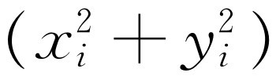
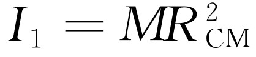
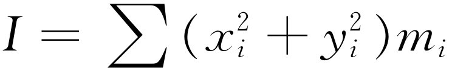
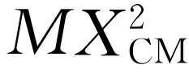
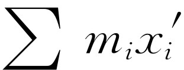
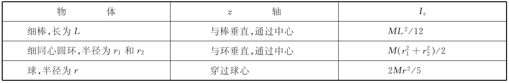
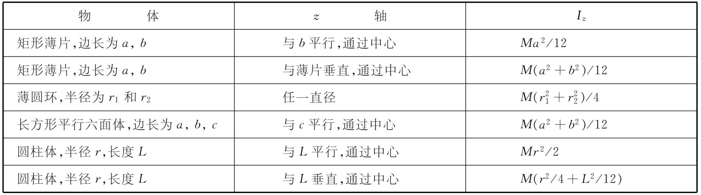
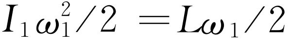
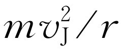

在前一章中，我们发现假如有许多力作用在一个由粒子组成的复合体上，不管这些粒子构成刚体或者非刚体，还是星云或者其他任何东西，我们总能求出所有这些力的和（当然，这里是指外力，因为内力已相互抵消）。如果我们把这个物体看成是一个整体，具有总质量M ，并且在物体“内部”有一个称为质心 的点，那么整个物体的质量就可以看成正好集中在该点上，外力的合力使这个点产生一个加速度。现在我们来较详细地讨论质心问题。
质心（缩写成CM）的位置由下式给出
当然，这是一个矢量式，实际上是三个式子，在x ，y ，z 三个方向上每个方向一个。我们将只考虑x -方向，因为这个方向搞清楚了，其他两个方向也就清楚了。X CM =∑m i x i /∑m i 表示什么呢？先假设物体被分成一些小块，每一小块都有相同的质量m ；因此，总质量简单地就等于块数N 乘每块的质量，比方说1克，或其他单位。这样，这个式子就可以简单地写成所有x 量的总和除以小块的数目：X CM =m ∑x i /（mN ）=∑x i /N 。换句话说，假如每块质量相等，X CM 就是所有x 的平均值。但是，如果其中有一块的重量是其他块重量的两倍，则在求和时，相应的x 应出现两次。这是很容易理解的，我们可以设想把这两倍的质量分开成相等的两块，每块刚好和其他小块一样，这样，在求平均值时，因为那里有两个质量，x 当然应计算两次。因此X 是所有质量在x 方向上的平均位置，其中每个质量所计算的次数都正比于这个质量的大小，就好像它已分为“小粒”一样。由此出发，容易证明X 一定在最大的x 和最小的x 之间，即在包住整个物体的包络之内。它并不一定就在组成物体的材料 中，因为物体可以是一个圆环，如一个铁箍，它的质心就是铁箍的中心，并不是在铁箍自身上面。
当然，如果一个物体具有某种对称性，例如矩形，它有一个对称面，其质心就处在对称面上，在矩形特例中，有两个对称面，这就唯一地确定了质心。假如是一个具有任何对称性的物体，它的重心位于对称轴上，因为在这种情况下，有多少个负x 就有多少个正x 。
下面来讨论一个非常有趣而又奇妙的问题，假如我们设想一个物体由A和B两部分组成（图19-1）。整个物体的质心可用如下办法求出：首先求出A的质心，然后求出B的质心，再求出每一部分的总质量M A 和M B 。接着考虑一个新的问题，在物体A的质心处有一个质量为M A 的点 ，在物体B的质心处有一个质量为M B 的点 。这两个质点的质心也就是整个物体的质心。换句话说，假如已经求出一个物体的各部分的质心，我们就不需要再从头开始来找出整个物体的质心，只需要把每一部分都当作位于其质心的一个质点，再把各个部分放在一起来处理就行了。我们来看看为什么可以这样做。假设我们要计算整个物体的质心，而这个物体的一部分粒子可看成是包含在物体A内，另一些粒子包含在物体B内。总的和∑m i x i 可以分成两个部分：∑A m i x i 只对物体A求和，∑B m i x i 只对物体B求和。现在来单独计算物体A的质心，这正是总和的第一部分。我们知道这一部分本身就是M A X A ，即在A中的所有粒子的总质量乘A的质心位置，因为这正是对物体A应用质心定理的结果。同理，对于物体B，有M B X B ，当然，两者相加就得到MX CM
显然，由于M A 和M B 之和为M ，所以式（19.2）可以看成是两个点状物体：一个质量为M A ，位于X A ，另一个质量为M B ，位于X B ——质心公式的一个特例。
关于质心运动的定理是非常有趣的，而且它在我们了解物理学的发展过程中具有很重要的作用。假设牛顿定律对于一个比较大的物体的各个较小的组成部分都成立，那么这个定理表明，即使我们不去研究这个大的物体的细节，而只研究作用在它上面的总的力和它的质量，牛顿定律对这个大的物体也是适用的。换句话说，牛顿定律有这样一种独特的性质，如果它在某一小尺度范围内是正确的，那么在大尺度范围内也将是正确的。假如我们不考虑棒球是由无数相互作用的粒子组成的极端复杂的结构，而只研究它的质心运动和作用在棒球上的外力，我们得到F =m a ，这里 F 是作用在棒球上的外力，m 是它的质量， a 是它的质心的加速度。因此， F =m a 是一个在较大的尺度范围内也能重现其自身的定律（也许应有一个来源于希腊文的较好的字来描述在大尺度范围内也能重现同样规律的那种定律）。
当然，人们可以猜想人类最初能够发现的定律应该是能在较大的尺度范围内重现的。为什么呢？因为宇宙基本齿轮的实际尺度是原子的尺度，而它比我们观察到的尺度要小得多，因而在通常的观察中离这种尺度很远。所以我们最初得以发现的定律对于这种非原子尺度那样特殊大小的物体必定是正确的。如果有关小粒子的定律不能在较大尺度范围内重现，我们就不能那么容易地发现它们。那么，反过来问题又会怎样呢？小尺度范围内适用的定律必须和大尺度范围的定律相同吗？当然，适用于原子范围的定律在本质上并不一定要与在大尺度范围内适用的定律相同。假设原子运动的真正规律由某种奇特的方程确定，这个方程并不具有当我们研究大尺度问题时重现同样规律的性质，而是具有这样的性质：当我们处理大尺度问题时，我们可以用某种表示式作为近似 ，以致如果我们一步一步地推广这个表示式，它 就能在越来越大的尺度下不断重现。这是可能的，而且正符合实际情况。牛顿定律就是推广至非常大的尺度范围的原子规律的“末端”。在微观尺度下粒子运动的真正规律是非常特殊的，但是如果取大量的粒子，把它们组合起来，它们就近似于而且也仅仅 是近似于牛顿定律。牛顿定律使我们能够继续处理尺度越来越大的问题，而且看来仍然是同一定律。实际上，随着尺度的不断变大，牛顿定律也就越来越精确。牛顿定律这种自我重现的因素并不真正是自然界的根本特色，而是一个重要的历史特色。在最初的观察中，我们决不会发现原子微粒的基本规律，因为最初的观察太粗糙了。实际上，现在知道，基本的原子规律，即所谓的量子力学，与牛顿力学非常不同，而且很难理解，因为我们所有的直接经验都与大尺度的物体有关，而尺度很小的原子的行为与我们在大尺度上所见到的根本不一样。因此，我们不能讲：“一个原子就像一个围绕太阳运转的行星”，或诸如此类的话。它不像 我们所熟悉的任何东西 ，因为没有任何东西与之相似 。当我们把量子力学应用到越来越大的物体上时，关于许多原子集合在一起的行为的规律并不是原子行为规律的再现，而是产生一些新的规律 ，即牛顿定律，至于牛顿定律本身则不断地重现，比如说从小至微微克的物体——它已经包含有数以兆亿计的原子——到大至地球，甚至更大的物体都适用。
现在，我们再回到质心问题上来。质心有时也叫重心，因为在许多情况下，重力可以看成是均匀的。假设有一个尺度相当小的物体，其重力不仅与质量成正比，而且到处都与某一固定线段平行。然后考虑一个物体，在这个物体的每一个组成部分上都有重力作用。用m i 表示某一部分的质量，作用于这一部分的重力是m i 乘g 。现在要问，应在何处加一个力，使它和作用在整个物体上的重力相平衡，从而使得整个物体，如果它是一个刚体的话，不发生转动？答案是这个力必须通过质心，我们将用下面的方法来说明这个问题。要使物体不转动，所有力产生的转矩之和应为零，因为假如转矩不为零，就会有角动量的变化，也就必然会有转动。因此，我们必须算出作用在所有粒子上的总转矩，看一下它相对于任一给定轴有多大；如果轴通过质心，则总转矩必定为零。现在以水平方向表示x 轴，竖直方向表示y 轴，我们知道转矩就是在y 方向的力乘力臂x （也就是说，力乘我们所要量度的转矩的力臂）。整个转矩是
τ =∑m i gx i =g ∑m i x i ，（19.3）
因此，如果总转矩为零，则和∑m i x i 必为零。但是∑m i x i =MX ，即等于总质量乘质心与轴的距离。这就是说，质心离开轴的距离x 为零。
当然，这里我们只对x 距离验证了结果，但是如果我们采用真正的质心，物体将在任何位置上都平衡，因为假如把物体转过90°，y 就取代了原来的x 。换句话说，当一个物体的支点在质心上时，由于作用在物体上的是一个平行的重力场，因而转矩为零。在物体很大，以致重力明显不平行的情况下，我们必须在那上面施加平衡力的中心就很难简单地描述，它与质心略有偏离。这就是人们为什么必须把质心和重心区别开来的原因。物体的支点在质心上将在所有位置上都能平衡的事实具有另一个有趣的结果。如果用加速度引起的赝力来代替万有引力，我们可以用完全相同的数学程序来求出支撑物体的某个位置，使得加速度的惯性力不产生任何转矩。假设把物体以某种方式放在一个盒子内，这个盒子和盒子内的一切物体都作加速运动。我们知道，在和加速盒子相对静止的人看来，有一个由惯性产生的有效力。这就是说，要使物体和盒子一起运动，我们必须推它，使之加速，而这个推力被“惯性力”所“平衡”，这个“惯性力”是一种赝力，其大小等于质量乘盒子的加速度。对于在盒子里的人来说，就像物体处于一个均匀重力场的情况一样，不过这里“g ”的值等于加速度a 。因此，由于加速一个物体所引起的惯性力对质心的转矩为零。
这一事实产生了一个非常有趣的结论。在没有加速度的惯性参照系中，转矩始终等于角动量的变化率。然而，对于穿过正在 加速的物体质心的轴来说，其转矩等于角动量的变化率仍然 成立。即使质心在作加速运动，我们仍可找出一根特殊的通过质心的轴，使转矩等于绕这根轴的角动量的变化率的结论仍然成立。因此，转矩等于角动量的变化率这个定理，在两个普通的情况下都是正确的：（1）惯性空间中一根固定轴；（2）一根轴通过质心，即使物体可能在作加速运动。
计算质心的数学技巧属于数学课的范围，这类问题为积分计算提供了很好的练习。然而在学过积分后，要想知道如何求质心位置，了解一些用以处理这类问题的技巧还是大有好处的。其中一个技巧是利用所谓帕普斯（Pappus）定理。它是这样的：假如在一个平面上取任一闭合区域，并使它在空间运动而形成一个立体，在运动时，令各点的运动方向始终垂直于该区域的平面，这样形成的立体的总体积就等于它的横截面乘质心在运动过程中所经过的距离！假如我们使这个区域沿着一条与它本身垂直的直线运动，毫无疑问，这个定理是成立的，但是假如使它沿着一个圆或某种其他曲线运动，就得出一个相当特殊的体积。对于曲线路径来说，其外部走得较远，内部走得较近，而这种效果正好相互抵消。因此，假如要求出一个密度均匀的薄板的质心位置，我们可以记住，薄片绕某一轴旋转形成的体积就等于其质心走过的距离乘薄板的面积。
例如，我们要求出底边为D ，高度为H （如图19-2）的直角三角形的质心，可用如下的办法解这个问题。想象一根沿H 的轴，使三角形绕轴旋转整整360°。这就形成了一个锥体。质心的x 坐标走过的距离是2π x 。被移动的面积就是三角形的面积，为HD /2。因此，质心的x 距离乘上三角形的面积就是所扫过的体积，这个体积当然应是π D 2 H /3。这样就有（2π x ）（HD /2）=π D 2 H /3，即x =D /3。用类似的方法使它绕另一轴转动，或根据对称性，可以求出y =H /3。实际上，任何均匀三角形面积的质心都是在三条中线，即从顶点到对边中点的连线的交点上。这一点在每条中线的1/3处。线索是：把三角形分成许多小片，每一片都和底边平行。可以看到中线平分每一小片，因此质心一定在中线上。
现在来研究一个较为复杂的图形。假设要求出一个均匀半圆盘——把一个圆盘一分为二的质心的位置。质心在何处？对整个圆盘来说，它无疑是在中心，但是，一个半圆盘要困难一些。用r 表示圆盘半径，x 为质心到半圆盘直边的距离。以直边为轴，使半圆盘旋转，得到一个球体。这样，质心走过了2π x ，半圆盘的面积是π r 2 /2（因为只有圆的一半）。当然，形成的体积应为4π r 3 /3，由此可得
即
帕普斯还有另一个定理，它是上述例子的一个特殊情况，因此同样是正确的。假设，用一段质量密度均匀的半圆形的导线来代替实心的半圆盘，我们要求出它的质心。在这种情况下，内部没有质量，质量都在导线上。结果表明一条平面曲线按上述方式运动时扫过的面积 等于质心运动的距离乘线的长度 （可以把导线看成是一个非常窄的面，因而对它也能应用上述定理）。
现在我们来讨论求出各种物体转动惯量 的问题。一个物体对z轴的转动惯量的公式是
或
I =∫（x 2 +y 2 ）dm =∫（x 2 +y 2 ） ρdv .（19.4）
这就是说，必须让每一个质量乘以它离开轴的距离的平方 ，然后求和。必须注意，这不是三维距离，而只是二维距离的平方，对三维的物体也是如此。在大多数情况下，我们将仅限于研究三维物体，但是在三维情况下绕z 轴转动的公式是完全相同的。
作为一个简单的例子，我们考虑一根木棒绕穿过其一端的垂直轴转动的情况（图19-3）。现在应该对所有质量与x 距离平方的乘积求和（在此例中y 为零）。“求和”指的是什么呢？当然是指x 2 乘小质量元的积分。假如我们把木棒分成很小的长度元dx ，相应的质量元和dx 成比例，并用L 表示整个棒的长度，M 表示总质量。因此有
于是
转动惯量的量纲总是质量乘长度平方，因此，我们真正需要求出的是因子1/3。
假如转轴取在棒的中心，那么I 是什么呢？我们可以重做一次积分，将x 的范围取为从-L /2到+L /2。但是我们注意关于转动惯量的几个特点。可以把这根棒设想成两根棒，每根棒的质量为M /2，长度为L /2，则两根小棒的转动惯量相等，且都由式（19.5）给出。因此，转动惯量为
由此可见，绕中心转动的一根棒要比绕它的端点转动容易得多。
当然，我们可以继续计算各种其他有关物体的转动惯量。但是，尽管这种计算为积分运算提供了一定数量的重要练习机会，但从根本上对我们来说并不是太感兴趣的。然而，这里有一个十分有用的有趣定理。假设有一个物体，我们要求出它绕某个轴的转动惯量。这意味着我们要求出使它对某个轴转动时所需要的惯性。假如支撑这个物体的支点就在质心处，使物体绕轴旋转时，本身并不转动（因为惯性力的效果对它不产生转矩作用，因此当我们使它运动时，它本身不会转动），那么它绕轴旋转所需要的力就像把它的所有质量都集中在质心上的情况一样，转动惯量可以简单地写成 ，式中R CM 为轴到质心的距离。当然这不是在绕轴旋转时本身打转的物体的转动惯量的正确公式，因为这时不仅因为质心作圆周运动而对转动惯量有一个贡献I 1 ，而且它还要绕质心转动。因此，有理由在I 1 上还要加上相对于质心的转动惯量I c 。所以可以推测，相对于任何一个轴的总转动惯量应为
这个定理叫做平行轴定理 ，它很容易证明。相对于任何轴的转动惯量都是质量乘x i 的平方和y i 的平方之和： 。我们着重研究x 项，当然y 项的情况也完全一样。这里x 是某一特定质点离开原点的距离，但是如果用它到质心CM的距离x ′来代替它到原点的距离x ，将会出现什么情况呢？为了分析方便起见，可写成
然后，将两端平方，得
那么，当此式乘以m i 再对所有i 求和，会得到什么情况呢？把常数提到求和符号外边，得到
第三项求和很简单，就是 。在第二项求和中有两部分，一部分为 ，是总质量乘质心的坐标x ′。但是这部分没有贡献，因为x ′是从质心量起 的，在这些轴中，以粒子质量为权重的所有粒子的平均位置为零。第一求和项，当然就是I c 的x 分量。因此，我们就得到了式（19.7），和我们推测的完全一样。
让我们举一个例子来验证式（19.7）。我们来看一下它是否适用于木棒的情形。对于通过一个端点的轴，转动惯量为ML 2 /3，我们已经算过了。棒的质心当然就在它的中点，在L /2距离处。因此，应该有ML 2 /3=ML 2 /12+M （L /2）2 。既然1/4加1/12是1/3，所以我们没有犯根本的错误。
附带提一下，我们并不真正需要积分去求式（19.5）的转动惯量。只要假定它等于ML 2 乘一个未知系数γ ，然后利用分为两半的论证法去得出式（19.6）的系数为γ /4，再根据平移轴线的论证，就能得到γ =γ /4+1/4，因此γ 一定是1/3。求转动惯量常常有不同的方法。
在应用平行轴定理时，记住I c 的轴必须平行于 要求的那个转动惯量所对应的轴，显然是十分重要的。
转动惯量还有一个性质值得一提，因为它对求某些形式物体的转动惯量非常有用。这就是：假如有一个平面图形 和一组原点就在此平面上，z 轴垂直于此平面的坐标轴，那么这个图形对z 轴的转动惯量等于相对于x 轴和y 轴的转动惯量之和。这是很容易证明的，只需注意
（由于z i =0）。同样
举一个例子，有一质量为M ，宽为w ，长为L 的均匀矩形板，对于穿过平板中心且与之垂直的轴线来说，平板的转动惯量为
因为相对于一根在平面内并且平行于它的边长的轴来说，就像长为ω 的棒一样，它的转动惯量是Mω 2 /12；而相对于平面内的另一根轴，也像长为L 的棒一样，它的转动惯量是ML 2 /12。
概括地说，一个物体对某一给定轴（我们称之为z 轴）的转动惯量具有如下性质：
（1）转动惯量是
（2）假如一个物体由很多部分组成，每一部分的转动惯量已知，则总转动惯量就是各部分转动惯量之和。
（3）相对于任一给定轴的转动惯量等于相对于通过质心的平行轴的转动惯量再加上总质量与给定轴到质心距离平方的乘积。
（4）假如物体是一个平面图形，它相对于与平面垂直的轴的转动惯量等于相对于在平面内两根相互垂直且与前述垂直轴相交的任意两根轴的转动惯量之和。
表19-1列出了一些质量密度均匀的基本图形的转动惯量。应用上述性质，可以从表19-1推导出一些其他物体的转动惯量，我们将它列于表19-2中。
表19-1
表19-2
现在我们来进一步讨论动力学问题。在第18章中我们讨论直线运动和角运动之间的类比关系时，应用了功的原理，但没有谈到动能。一个绕某一给定轴以角速度ω 转动的刚体的动能是什么呢？通过类比，我们可以马上猜出正确的答案。转动惯量相应于质量，角速度相应于速度，因此，动能应该是Iω 2 /2。正是这样，下面就来证明：假设物体绕一个轴转动，因而它上面的每一点都有一个速度，其大小为ωr i ，这里r i 是特定点到轴的半径，假如m i 为这个点的质量，则整个物体的总动能是所有小块的动能之和
因为ω 2 是常数，对各个点都是一样，所以
在第18章末，我们指出了某种物体的一些有趣现象，这种物体不是刚体，但它可以从具有一定转动惯量的一种刚体状况变成另一种刚体状况。例如，在我们的转台实验中，当手伸开时，我们有一定的转动惯量I 1 和一定的角速度ω 1 。当把手缩回时，我们有另一个转动惯量I 2 和角速度ω 2 ，但是，我们还是“刚体”。因为相对于转台的竖直轴没有转矩，所以角动量应守恒。这就是说，I 1 ω 1 =I 2 ω 2 。但能量的情况如何呢？这是一个很有趣的问题。当手缩回时，我们转得更快了，但转动惯量变小了，这样看来好像能量应该相等。但并非如此，因为保持守恒的是Iω ，而不是Iω 2 。假如我们比较一下前后的动能，开始的动能是 ，这里L =I 1 ω 1 =I 2 ω 2 是角动量。后来，根据同样的论证，有T =Lω 2 /2，由于ω 2 ＞ω 1 ，所以转动动能比开始时大了。因此，当手伸开时，我们有一定的能量，当手缩回时，我们转得更快，并有更大的动能。这与能量守恒定律矛盾吗？一定有某人做了功。这就是我们自己！什么时候我们做了功呢？当我们水平移动一个重物时，我们没有做任何功。假如我们拿着一个东西，把手伸出去再缩回来，我们没有做任何功。但这是我们不作转动的情况！当我们在 转动时，就有一个离心力作用在重物上，并且重物有飞开的趋势，因此我们必须拉着它以克服离心力。所以，我们克服离心力所做的功应该与转动能量之差相一致，确实是这样。这就是额外动能的来源。
还有一个有趣的特征，我们把它作为一个普遍关心的问题，作一些说明，这个特征要更深奥一点，但值得一提，因为它非常奇特而且能产生很多有趣的效果。
再来看一下转台实验。从转动着的人的观点来分别考虑身体和手臂。在重物拉回来以后，整个物体旋转加快，不过请注意，身体的中心部分没有变化 ，但它也比以前转得快了。假如我们围绕身体这部分画一个圆，只考虑圆内的物体，它们的 角动量必将变化 ；它们运动得更快了。因此，当我们把手缩回时，一定有一个转矩作用在身体上。离心力不会有转矩作用，因为它是沿径向的。这就是说，出现在转动系统的力中，不仅仅有离心力，还有其他力 。这另一个力叫做科里奥利力 ，它具有非常奇怪的性质，即当我们在转动系统中移动一个物体时，它似乎被推向侧面。和离心力一样，它是一个表观上的力。但是假如我们生活在转动着的系统中，要沿径向移动某个物体时，我们将发现要从侧面推它才能使它沿径向运动。我们必须施加的这个侧向推力正是使我们身体转动的原因。
现在我们引进一个公式来表示科里奥利力的实际作用。假如莫坐在旋转木马上，在他看来木马是静止的。但是对站在地面上，并对力学规律有很好了解的乔来说，旋转木马在转动。假设我们在旋转木马上画一条径向线，莫正在沿这条径向线移动某个有质量的物体。我们将证明要这样做需要有一个侧向作用力。为了证明这一点，只要注意物体的角动量。因为它一直以同一角速度ω 转动，所以角动量是
L=mv 切向 r =mωr ·r =mωr 2 ，
因此，当物体靠近中心时，它具有相对较小的角动量。但是假如把它移到一个较远的新的位置，即增大r ，则m 具有较大的角动量，因此一定要施加一个转矩 ，才能使物体沿径向移动（要沿着旋转木马的径向行走，你就必须把身子斜过来，向旁边作用一个推力。有机会时试试看）。在m 沿径向移动时，所需要的转矩等于L 随时间的变化率。如果m 只沿径向运动，ω 保持恒定，那么转矩就是
这里F c 是科里奥利力。我们真正想要知道的是莫必须作用一个怎样的侧向力 ，才能使m 以速率v r =dr /dt 向外移动。这个力就是F c =τ/r =2mωv r 。
这样，我们就得出了科里奥利力的公式，让我们再仔细地观察一下，看看是否能从更基本的观点来理解这个力的来源。我们注意到科里奥利力在各个径向上都是一样的，甚至在原点也明显地存在。但在原点处特别容易理解这个力，只要从站在地面上的乔的惯性系中来观察所发生的情况就行了。图19-4表示物体m 的三个连续位置，在t =0时，正好通过原点。由于旋转木马在转动，我们看到m 不是沿一条直线运动，而是沿一条曲线 运动，这条曲线在r =0处与旋转木马的直径相切。要使物体m 沿曲线运动，在绝对空间中必须有一个力使它加速。这就是科里奥利力。
这并不是发生科里奥利力的唯一情况。我们还可以证明，假如一个物体作匀速圆周运动，也有科里奥利力。为什么？莫看到沿圆周运动的速度是v M ，而另一方面，在乔看来，m 是以速度v J =v M +ωr 绕圆周运动，因为m 正被旋转木马带着一起运动。因此，我们认识到，这个力实际上就是速度v J 产生的总的向心力，即 ；这是实际存在的力。现在，从莫看来，这个向心力有三个部分。我们可以把它全部写出
这里，F r 是莫应该看到的力。我们试试看来理解它。莫会感觉到第一项吗？他一定会说，“是的，即使在我不转动的时候，假如我以速度v M 沿圆周跑，也一定会有一个向心力”。这就是莫一定会预料到的向心力，它与转动无关。此外，莫也十分清楚，还有另外一个向心力，甚至当物体静止在他的旋转木马上时，这个力也要对它发生作用。这就是第三项。除此两项外，还有一项，即第二项，它又是2mωv 。当速度是径向时，科里奥利力F c 是沿切向的，而当速度沿切向时，它是径向的。实际上，这个式子与另一个式子差一个负号，不管速度的方向如何变，这个力相对于速度的方向总是一样的。它与速度方向垂直，大小为2mωv 。